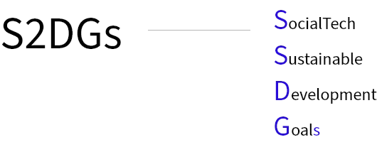
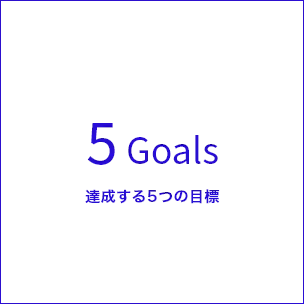
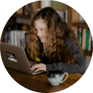
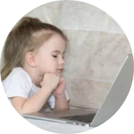
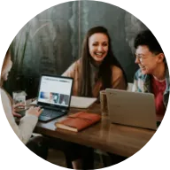
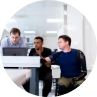

MISSION
ミッションTOP > MISSION
S2DGsの実現
国連の掲げる大中小169個の目標「SDGs」のうち、以下の5つの大目標の実現をミッションとします。



01
貧困をなくそう
平均年収の高いエンジニアになることを支援し、相対的貧困を抜け出す社会人を増やしていきます。さらに、技能取得や職業訓練の機会を得られない貧困家庭の子供にもIT教育を提供し「貧困の連鎖」を食い止めることを目指します。

02
質の高い教育をみんなに
手頃な価格で質の高い技術・職業教育の提供を行い、誰もがエンジニアになれるための教育プラットフォームを目指します。子供向けSTEAM教育を提供し、グローバル社会やAI時代に適応して世界で通用する価値の高い人材を育成します。
03
ジェンダー平等の実現
女性エンジニアを輩出することは、ジェンダーギャップ指数の経済、教育分野に影響を与えると考えています。女性エンジニアを増やすことで、ライフイベントが多い女性の社会進出を促す機会の創出やシングルマザーの貧困解消をし、男女格差の無い、健全な社会を目指します。

04
生産的で働きがいのある雇用
長期的な経済成長を継続するためには、生産性を高めた産業の拡大と人材の輩出が必要です。エンジニアはイノベーション産業を成長させるための大きな鍵を握っており、さらにクリエイティブな職業で働きがいのある人間らしい雇用を生み出せると考えています。

05
不平等をなくす
障害やハンディキャップを持っていても、エンジニアになることで生産的に働くことができます。障がい者雇用における正社員率と平均賃金に大きな開きを無くすために、誰もがエンジニアになれる機会を提供します。